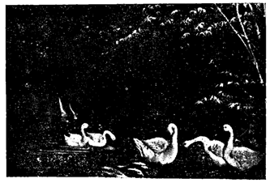

PHẦN THỨ BẢY:
BÁNH PHỒNG TÔM SA-GIANG
SẢN PHẨM ĐẶC BIỆT CỦA TỈNH SA-ĐÉC
Mỗi địa phương đều có những món ngon vật lạ nức tiếng. Khách lữ hành mỗi khi đi từ tỉnh này qua tỉnh khác, khi trở về ít lắm cũng mua một vài món thổ sản chế biến tại địa phương ấy về tặng cho người quyến thuộc. Nhất là ngày Tết Nguyên-Đán của người Việt, những ai có bà con ở xa, hay ở ngoại quốc cũng lựa thức ăn này, thức ăn kia có danh tiếng mà gởi biếu.
Mỹ-Tho có kẹo chuối, bánh tráng, bạch nha. Gò-Công có mắm chà, mắm tôm, mắm tép. Thủ-Đức nem chua, chả. Châu-Đốc có mắm thái. Sa-Đéc bánh phồng tôm v.v... Thiết tưởng nơi nào cũng có những món đặc biệt sản xuất tại nội địa, có khi xuất cảng ra ngoại quốc là khác.
Nay bắt tay vào viết quyển "Sa-Đéc xưa và nay", nói đến sản phẩm địa phương, có lẽ đứng đầu hết phải kể là ngành sản xuất bánh phồng tôm, mà Sa-Đéc nổi tiếng nhất với loại bánh này và còn thêm cải tiến, biến chế hơn lên, để trở thành một món ăn thuần túy.
Sa-Đéc hiện nay có độ 20 nhà sản xuất bánh phồng tôm, nhà nào cũng có ít nhiều máy móc trang bị. Như hiệu Phước-Hưng của bà Út-Chơi, Phước-Thành của bà Tư-Hón, Sa-Đéc của bà Năm-Cầm, Mai-Hương của bà Giáo Dung, Thành-Tâm của bà Hai Khe v.v... Đặc biệt là hãng Sa-Giang, có uy tín và nhiều phương tiện vượt xa các nhà làm bánh khác. Chủ nhân hiệu Sa-Giang là ông Lê-Minh-Triết, người gốc gác tại Lai-Vung (Sa-Đéc), xuất thân vốn là một cựu sĩ quan mới giải ngũ. Ông người bặt thiệp, vui vẻ, hiếu khách. Chúng tôi đến Sa-Đéc gặp ngay ông Triết, hỏi qua thị trường nghề làm bánh phồng tôm ở đây ra sao? Ông sẵn lòng trình bày cho chúng tôi biết, và hướng dẫn cho chúng tôi xem cơ sở ở dưới đất và trên lầu có gần ba bốn cái máy, do ông coi sóc cho nhân viên điều khiển. Ông giải thích rành mạch từ lúc khởi đầu làm bằng tay, sau lần hồi canh tân máy móc, và chỉ phòng ướp tôm, máy ép bánh, máy xấy bánh cho chúng tôi xem.
HÃNG SA-GIANG
Phải thành thật công nhận rằng chính ông Lê-Minh-Triết khởi sự đem cơ giới vào nghề. Trang bị máy móc để biến chế nghề làm bánh phồng tôm, hãng ông tăng năng xuất gấp mười ngày trước. Ông lại khéo điều hòa thị trường cung cấp tôm bằng cách đông lạnh và trữ lạnh tôm. Hiện tại ông có máy lạnh có năng xuất làm đông 200 ký tôm trong một chu kỳ 4 giờ đồng hồ. Và ba phòng trữ dung tích tổng cộng trên 100 thước khối.
CÁCH LÀM BÁNH PHỒNG TÔM
THEO LỐI CỔ TRUYỀN VIỆT-NAM
Muốn làm được một ký bánh phồng tôm, phải cần các nguyên liệu như sau:
- 2 ký tôm sống thật tươi. Khi bỏ đầu, lột vỏ, lấy ra được 700 gram thịt tôm.
- 1 ký bột khoai mì xay nhuyễn
- Gia vị, muối, đường, bột ngọt, tỏi, tiêu, nước mắm tùy theo sở thích của người mà thêm bớt.
- 4 hột vịt (nếu bỏ tròng đỏ thì phải 8 hột)
- Một chút bột nổi tức thứ thuốc tiêu mặn (bicarbonate de soude)
Cách thức biến chế như sau:
Thịt tôm được đập nhuyễn ra, trộn với gia vị, rồi bỏ vào cối đá xay cho thật nhuyễn. Xong cho bột vào trộn và quết thật nhiều, càng nhiều càng tốt, cho mọi thứ được trộn thật đều nhau. Thêm nước, nếu thấy nó khô. Đoạn gói bột ấy vào vải thành cây như khúc lỏm chuối, đem vào xửng hấp cách thủy độ một giờ đồng hồ. Lấy ra, lột vải, để trên dĩ qua đêm, sáng hôm sau, đem cây bánh xắc và phơi. Nếu nắng tốt phơi hai ngày là có thể vô bao đem bán được.
Cho đến ngày nay, các giai đoạn sau đây đã được làm bằng máy: đập tôm, xay tôm và gia vị, trộn bột vào tôm, quết bột, hấp cách thủy, xắc và sấy khô. Các nhà sản xuất tùy theo khả năng của mình mà mua sắm ít nhiều máy móc để thay dần từng giai đoạn biến chế đã kể trên.
NGHỀ LÀM BÁNH PHỒNG TÔM TRONG TƯƠNG LAI
Nhìn chung, chúng ta nhận thấy nghề làm bánh phồng tôm đã phát triển hơn xưa nhiều. Chẳng những kỹ thuật làm bánh đã tối tân hóa theo thời thượng, cho đến công việc thương mãi hóa món hàng, quảng cáo, phân phối cũng như công việc trình bày món hàng trong bao hay hộp, cũng dần dần được biến cải để có nhiều màu sắc Việt-Nam.


Đây là bên trong cửa hàng Sa-Giang với những dụng cụ máy móc tối tân.
Người đứng cạnh bên tủ lạnh là ông Lê-Minh-Triết, chủ nhân đang điều khiển công việc.
Trong tương lai, món bánh phồng tôm Việt-Nam có nhiều triển vọng được xuất cảng, khi nước Việt-Nam hòa bình trở lại và nông dân Việt-Nam có thể ban đêm đi câu tôm, đặt lờ, để có đủ tôm sống cung cấp cho ngành sản xuất này.
Nghe xong sự trình bày và nguyện vọng trong tương lai của ông Lê-Minh-Triết, chủ hãng bánh phồng tôm tân tiến Sa-Giang, chúng tôi bắt tay từ giả trong cảm tình lưu luyến, không quên đặt thêm một lời hỏi chót:
- Hãng Sa-Giang hẳn sẽ càng ngày càng lớn mạnh thêm? Ông đã có dự định chương trình xuất cảng ở ngày mai thế nào chưa?
Ông Triết cười tin tưởng:
- Sao không! Mì Nhật-Bổn, mì Đại-Hàn kia còn tràn ngập thị trường Việt-Nam được, thì trong tương lai, món bánh phồng tôm của ta tung ra trên thị trường ngoại quốc, hương vị có hơn chớ không kém chi mì Nhật, mì Đại-Hàn đâu. Tự nhiên phải được ngoại quốc hoan nghinh. Và chừng ấy, hãng Sa-Giang chúng tôi cũng như các đồng nghiệp khác quyết nổ lực đem chuông đi đánh xứ người.
Chúng tôi nhìn nhau nở nụ cười đồng ý.
SA-ĐÉC DANH TIẾNG VỚI CÁC NGHỀ THỦ CÔNG
NGHỀ LÀM PHÁO BÔNG, ĐỒ MÃ CHƯNG CỘ, CHƯNG QUẢ TỬ,
LÀM HÌNH NỔI TRÊN LỤA, ĐÈN SÁP
Thời đại khoa học phát triển đến cực điểm, mọi ngành dần dần đều được canh tân hóa, kỹ nghệ hóa. Tuy nhiên, ngành thủ công, với sự khéo léo tay chân, với trí ý tinh xảo chế biến của con người, bao giờ cũng đang được tưởng thưởng hơn máy móc. Tìm hiểu các ngành thủ công ở Sa-Đéc cũng có lắm sắc thái nổi bậc hơn nhiều nơi khác. Thật thế, từ xa xưa tỉnh Sa-Đéc vẫn đã có nhiều tay thợ khéo nổi tiếng, nhất là ngành thợ bạc là ngành mà Sa-Đéc thiết lập lò đầu tiên và từng đem ra ngoại quốc triển lãm, rước lấy tiếng khen, như chúng tôi đã trình bày riêng ở bài trước. Ngoài ngành thợ bạc ấy ra, hãy còn có những ngành thủ công xuất sắc khác, có thể nói là độc đáo, như mấy mươi năm trước đây, hiệu Thủy-Tiên đã nức danh với ngành tạo hình nổi trên lụa.
Chúng tôi tìm đến ông Trần-Quang-Huy, người Sa-Đéc, ông là chủ nhân hiệu Thủy-Tiên, nhà sản xuất hình nổi trên lụa toàn quốc. Người sành thưởng thức nghệ thuật chân dung nổi trên lụa, hẳn đều nghe biết tên hiệu Thủy-Tiên đã lừng lẫy tiếng tăm ở Sa-Đéc thuở nào. Nay nhân trình bày quyển "Sa-Đéc Xưa và Nay", nghĩ rằng khó thể bỏ qua mà không nhắc nhở đến hiệu Thủy-Tiên. Vì không nhắc đến, tưởng cũng là một điều thiếu sót, và cũng phụ lòng một người đã có công với nền mỹ thuật nước nhà.


Sa-Đéc từ xưa nổi tiếng với những nghề thủ công mỹ thuật.
Đây là cặp đèn hoa sáp của hiệu "Thủy Tiên" sáng chế đầu tiên để dùng cho việc cưới hỏi.
Gặp ông Trần-Quang-Huy tại tư gia ở đường Trần-Quốc-Toản, Sài-Gòn, chúng tôi cho biết ý định sẽ nói đến nghệ thuật chân dung nổi, nghệ thuật làm đồ mã, chưng quả tử, mà ông là người đáng được nhắc lại phần nào. Ông mỉm cười khiêm tốn:
- Ấy chết, trong thiên hạ còn thiếu chi người tài giỏi.
Nhưng hiệu "Thủy-Tiên" của ông, cũng là một cái giỏi trong muôn ngàn cái giỏi đáng được ghi dấu vết đấy chớ.
Nghe chúng tôi ngắt lời như thế, ông Trần-Quang-Huy khẽ thở dài, cảm xúc:
- Nếu được đời chẳng quên, âu cũng là một phần thưởng quý báu của những ai phụng sự cho nghệ thuật.
- Vậy thì ông đã cho phép tôi nhắc đến rồi đấy nhé.
Siết tay nhau trong tình thông cảm, chúng tôi cùng bâng khuâng.
Vâng, ông Trần-Quang-Huy chính là miêu duệ của cụ Trần-Quang-Hựu, và thân sinh ông là Trần-Quang-Hiển đã đóng góp cho nghệ thuật nước nhà qua những nghề làm đồ mã, chưng cộ, quả tử, bát tiên kỵ thú.
Đình đám ngày xưa có làm lễ thì rước các vị này đến dựng rạp chưng dọn, ai cũng khen ngợi. Thời xưa có những hội chợ ở Sài-Gòn, chính quyền cũng cho rước đến trình bày nghệ thuật mỹ quan hấp dẫn thị hiếu của quần chúng. Tài khéo lạ, mức tiếng xa gần.
Còn nghề làm hình nổi trên lụa do ông Trần-Quang-Huy sáng chế đầu tiên từ năm 1948 tại Sa-Đéc. Ông được cấp bằng của Bộ Kinh Tế phát vào năm 1948 và được nhiều giấy tờ ban khen.


Một trong những bức tranh làm bằng lụa nổi,
do nghề thủ công Sa-Đéc sáng chế.
Nghệ thuật làm hình nổi, đèn bóng sáp, được đem triển lãm nhiều nơi trên Sài-Gòn, nhà hát tây (nay là trụ sở quốc hội), Phòng Thông-Tin, Tòa Đô-Chánh và các cuộc hội chợ, được quan khách chú ý và hết lời tán thưởng cho là nghệ thuật tinh vi. Nhờ vậy mà hiện ông được nổi tiếng. Ông đã đào tạo rất nhiều môn sanh thành tài mở tiệm nhiều nơi.
Ngẫm lại, người Việt-Nam mình làm cái gì cũng không kém nước nào cả. Người Âu-Mỹ họ rất quý trọng nghề làm bằng tay hơn là máy móc.
Sa-Đéc cũng như nhiều nơi khác trên toàn quốc, kể về nghề thủ công đều có nghệ thuật tinh vi, đóng góp cho xứ sở nhiều công lao đáng được tán thưởng, làm vinh diệu cho nước nhà chẳng ít.

LÒ THỢ BẠC XƯA Ở TÂN-PHÚ-ĐÔNG
TIẾNG TĂM VANG TRUYỀN NGOẠI QUỐC
Ngày nay, trên lãnh thổ Việt-Nam, không nơi nào là chẳng có lò thợ bạc, hiệu kim hoàn. Và kể về sự khéo léo của các tay thợ giỏi sáng chế các kiểu nữ trang, ngày nay người thợ kim hoàn nước ta cũng rước được nhiều tiếng khen ngợi. Nhưng chưa có lò thợ bạc nào được vinh hạnh như lò thợ bạc đầu tiên sáng lập ở Tân-Phú-Đông thuở trước.
Hơn 90 năm trước, Sa-Đéc đã từng nổi danh là nơi có nhiều thợ bạc giỏi. Những món nữ trang của họ sáng chế, kiểu nào cùng sắc sảo và công phu vô kể. Bấy giờ, có ông Lý-Duy-Thiện, kêu là Hộ-Bửu, nghĩ đến danh dự của tỉnh nhà, nên khéo tập hợp các tay thợ bạc đầu tiên ở Tân-Phú-Đông, trong năm Tự-Đức thứ 23 (Canh-Ngọ 1870).


Di ảnh ông Huyện Lý-Ngọc-Sơn, người được tặng thưởng nhiều huy chương nhứt,
qua các cuộc đấu xảo do mỹ nghệ của ông ở Âu-Châu từ 1906 trở đi... (Ảnh sưu tầm)
Nguyên cụ Lý-Duy-Thiện, vốn người sanh trưởng tại làng Tân-Phú-Đông, tổng An-Trung, tỉnh Sa-Đéc, là một nhà công nghệ trứ danh. Từ năm Tự-Đức thứ 12 (1859), ông từng được quan lại địa phương kính mến và tấm lòng hảo nghĩa, nên dâng sớ tâu về triều đình xin ân thưởng. Do đó, cụ Lý-Duy-Thiện được vua Tự-Đức ban cho một tấm biển vàng khắc bốn chữ "Hảo Nghĩa Khả Phong". Từ khi cụ sáng lập lò thợ bạc, được hoan nghênh trong từng lớp dân chúng thì các mạng phụ phu nhân, các tiểu thư khuê các, thảy trầm trồ thích ý với các kiểu nữ trang tinh xảo, đua nhau mua sắm. Dần dần các tỉnh kế cận nghe tiếng, cũng đổ xô về Sa-Đéc lựa chọn những món trang sức theo ý muốn.
Đến năm 1878, có cuộc đấu xảo tại Pháp-quốc, chính quyền địa phương Sa-Đéc nghĩ ngay đến việc nên đưa nghề thợ bạc của tỉnh nhà sang Pháp dự cuộc đua tài. Được khuyến khích và tự tin ở tài năng của đám thợ khéo trong tỉnh nhà, cụ Lý-Duy-Thiện kêu là Hộ-Bửu chấp thuận, đem thợ khéo và các kiểu nữ trang sang đấu xảo tại Ba-Lê. Kết quả tốt đẹp.
Sa-Đéc được nức tiếng khen về mỹ nghệ khéo léo và tài tình nên chính phủ Pháp có ban thưởng cấp bằng danh dự. Vì những kiểu chạm trổ Long, Lân, Qui, Phụng hoặc những sáng chế đòi hỏi thật nhiều công phu tinh xảo và khó khăn không mấy ai làm được, đã khiến người ngoại quốc phải trầm trồ.
Tám năm sau, vào năm 1885, có cuộc triển lãm ở kinh thành Anvers, nước Bỉ (Belgique), chính quyền địa phương Sa-Đéc lại khuyến khích cụ Hộ-Bửu đem chuông đi đánh nước người một lần nữa. Mà lần này lại là một nước tây phương xa lạ. Đông đảo kỹ nghệ các nước dự cuộc đua tài khéo. Hơn nữa, nhờ có kinh nghiệm ở kỳ đấu xảo tại Ba-Lê, và đã vững tin ở đám thợ giỏi của mình, cụ Hộ-Bửu đưa đoàn thợ cưng của cụ đi dự triển lãm ở nước Bỉ. Quả nhiên, lần thứ hai, Sa-Đéc lại được ngoại quốc chú ý khen ngợi về tài khéo và ban thưởng bội tinh bằng đồng.
Bảy năm sau nữa, lại có cuộc đấu xảo lần thứ hai ở Bỉ, Sa-Đéc cũng ghi tên dự cuộc, và vẫn giữ tiếng khen với ngành chế tạo nữ trang.
Trước sau ba lần, cả mấy kỳ đấu xảo ở ngoại quốc đều được danh dự, kể cũng là một vinh diệu hi hữu cho nghề thợ bạc. Đúng là nhất nghệ tinh, nhất thân vinh. Tỉnh Sa-Đéc lại nổi tiếng thợ bạc khéo trong cõi Nam-Kỳ là cũng từ đó.
Danh vọng cụ Hộ-Bửu Lý-Duy-Thiện cũng được nêu cao, nghiễm nhiên là người đầu tiên dựng lò thợ bạc ở Tân-Phú-Đông đã đem chuông đi đánh xứ người hoàn toàn tốt đẹp.
Khi cụ Bửu Lý-Duy-Thiện qua đời, người con là Lý-Ngọc-Sơn đắc cử Hội-Đồng địa hạt tổng An-Trung. Hai lần, ông đem nghề thợ bạc dự cuộc đấu xảo ở Hà-Nội năm 1902, và cuộc đấu xảo ở thành Marseille, nước Pháp năm 1906, đều được ban thưởng Chương-Mỹ Bội-Tinh.
Nghề thợ bạc mà được phô trương ở ngoại quốc và rước được tiếng khen, thiết tưởng cụ Hộ-Bửu Lý-Duy-Thiện và con là ông Huyện Hàm Lý-Ngọc-Sơn kêu là Vỉnh, phải được nêu danh muôn thuở.
Từ khi ông Lý-Ngọc-Sơn qua đời, thì ông Lý-Nhơn-Điền là con trai, hằng giữ một lòng kế nghiệp nghề thợ bạc của ông cha truyền để lại cho đời ông là tam đời.
Năm 1918, ông Toàn-Quyền Albert Sarraut đi kinh lý qua tỉnh Sa-Đéc, có đến viếng lò thợ bạc của ông Lý-Nhơn-Điền. Lúc bấy giờ, Tham-Biện tỉnh Sa-Đéc là ông Striedter và ông Chủ-Quận Trương-Văn-Nga làm thông ngôn, quan sát lò thợ bạc, xem xét từ món nữ trang chạm trổ rất tinh vi, được sự khuyến khích và khen ngợi của ông Toàn-Quyền thời ấy.
Năm 1918, ông Lý-Nhơn-Điền đem đồ mỹ nghệ triển lãm tại Hội-chợ Hà-Nội được bằng cấp danh dự (Diplôme de mérite). Năm 1922, tại thành Marseille (Pháp-quốc), ông Lý-Nhơn-Điền được mời qua triển lãm đồ mỹ nghệ riêng một gian hàng tại đường Annamite, section Indochinoise, được quan khách ngoại quốc chú ý hết lời tán thưởng.
Lúc đó, có Hoàng-Đế nước Việt-Nam, Vua Khải-Định, ngự giá du lịch tại Pháp-quốc, có ân thưởng cho ông Lý-Nhơn-Điền, một Khuê bài Kim-Khánh và được Hội-Đồng Bát-Lãm thưởng Bằng-cấp Thượng-hạng và Kim Bội-Tinh (Diplôme de grand prix, Médaille d'or). Vua Cao-Miên lại tặng Khuê-bài Ngũ-Đẵng Bửu-Tinh (Chevalier de l'Ordre Royal du Cambodge).
Tóm lại tỉnh Sa-Đéc được nổi tiếng thợ bạc khéo nhứt, trước tiên nhờ lò thợ bạc nhà họ Lý dem chuông đi đánh xứ người nhiều lần vang danh khắp chốn, đáng được nêu gương phụ truyền tử kế và cũng là vinh diệu cho tỉnh Sa-Đéc được người đời nhắc tới.